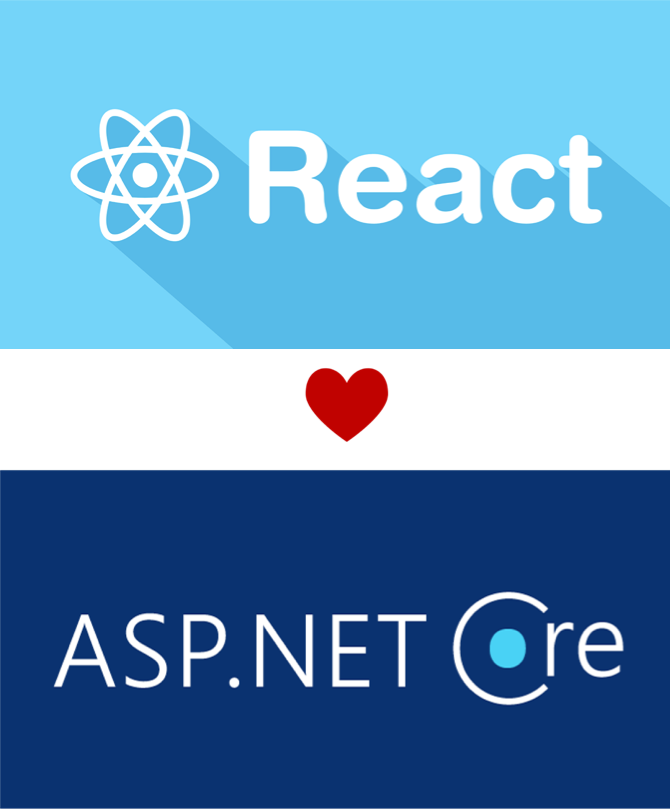
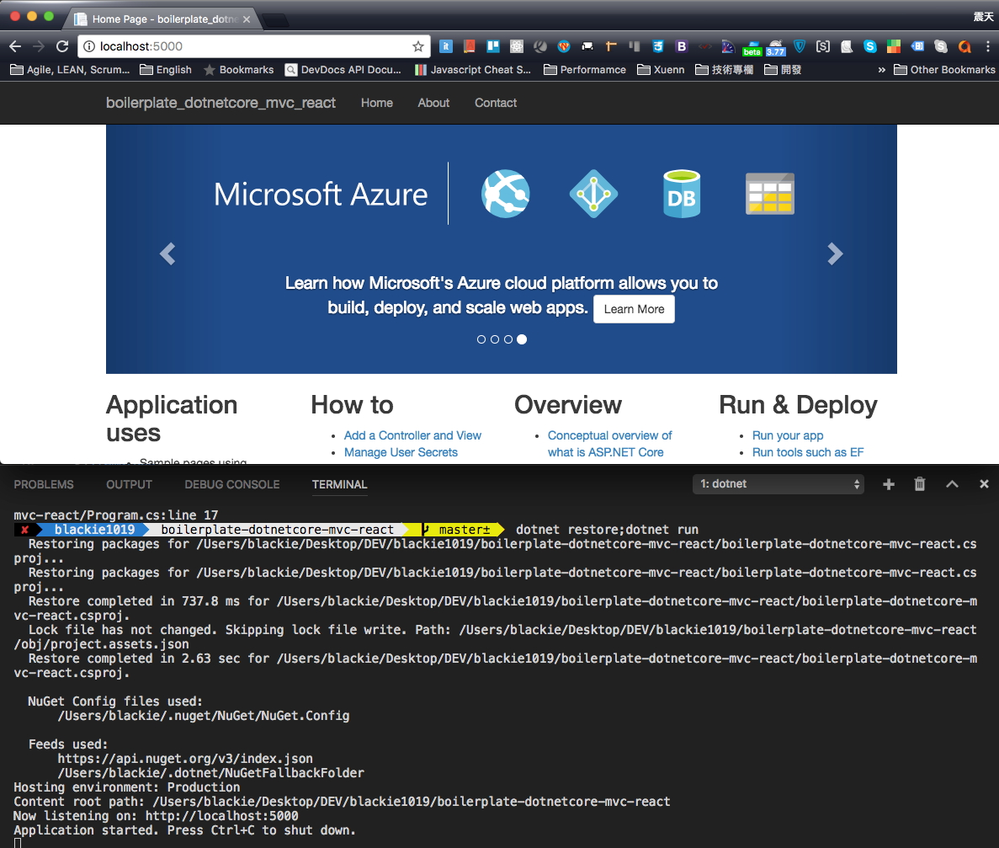
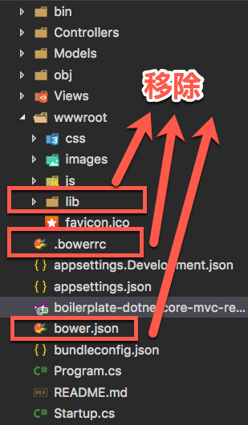
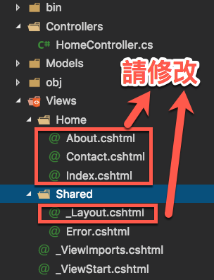
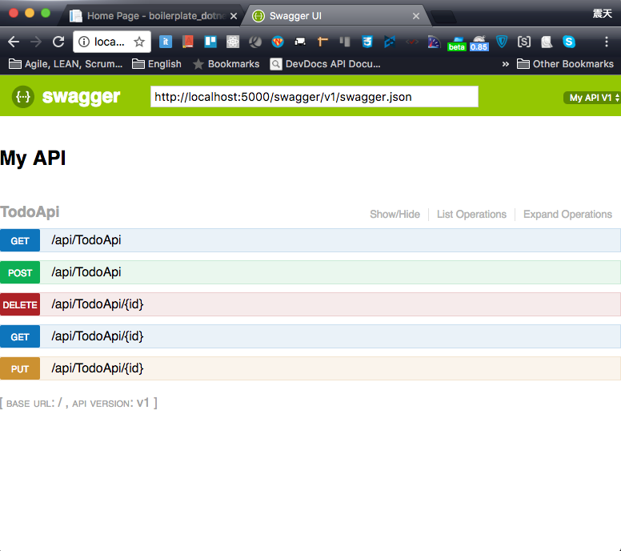
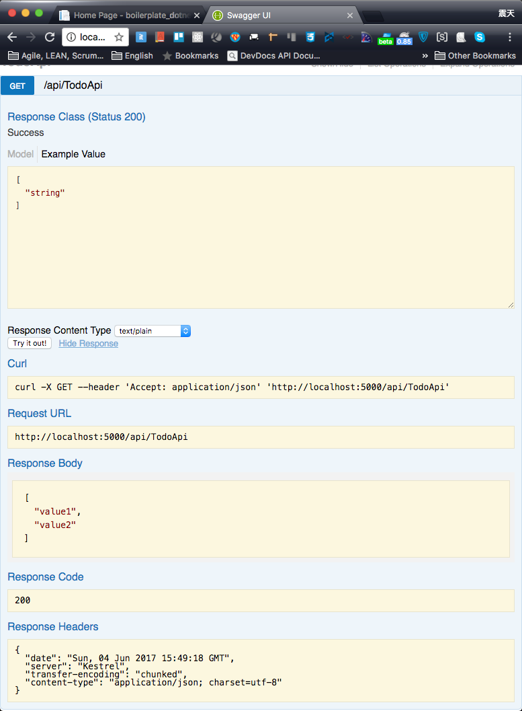
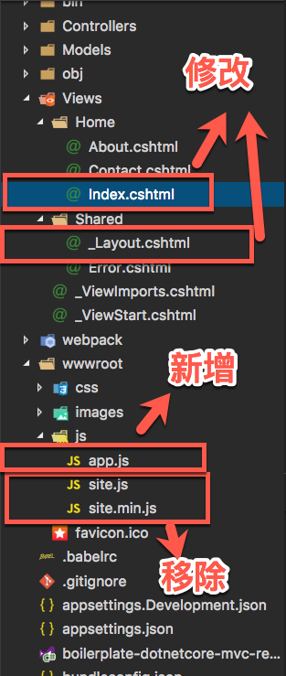
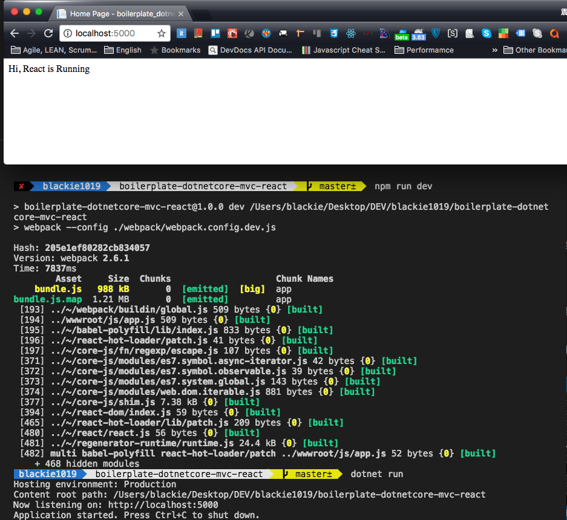
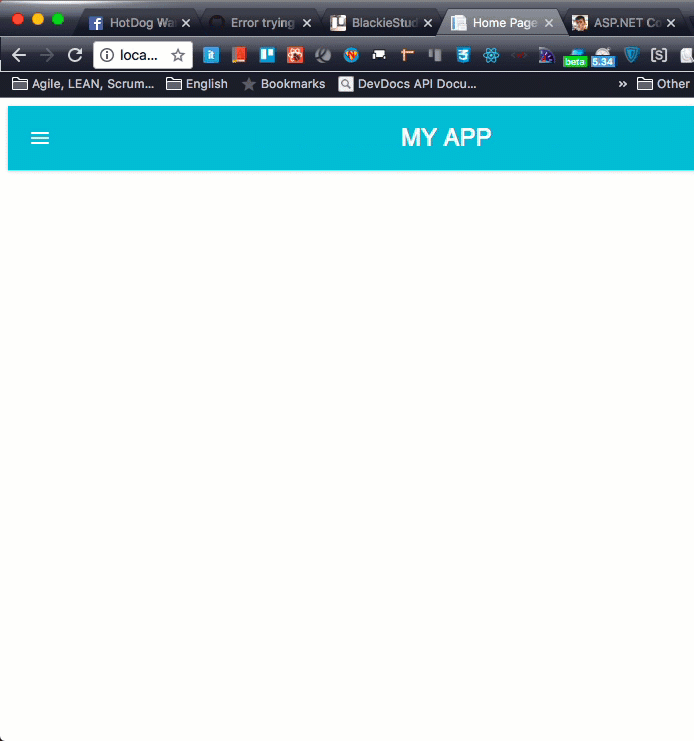

介紹如何將 ASP.NET Core 與 React + Webpack 的環境結合起來

先前有介紹過的微軟官方的ASP.NET Core play with SPA與ASP.NET Core SPA Boilerplate with React and Redux
這兩篇分享，可以透過SPA套件幫我們快速建立 React+Redux與 ASP.NET Core 的開發環境，但美中不足的是這套在開發 JS 上面預設使用 TypeScript 而非 Babel JS，這對多數的 React 的開發者並不是習慣且默認的開發方式．
今天就讓我們自己建立 React 與 ASP.NET Core 的開發環境．
Developing Environment Overview
首先，先看一下建立出來的環境結果應該為何：
- React + Webpack + Babel 處理前端套件開發
- ASP.NET Core 負責提供伺服器端必要的 View 與 API 處理溝通
- 引入 Swagger 模組，支援 API 測試與文件化
- 引入 react-hot-loader 模組，支援前端開發動態熱加載
- 引入 Microsoft.DotNet.Watcher.Tools 模組，支援 ASP.NET Core 開發動態熱加載
- 引入 Microsoft.AspNetCore.Mvc.TagHelpers，支援 Razer View Engine 可以給予不同環境(Development, Staging, Production)區塊的設定
- 引入 material-ui，支援頁面設計的呈現(請參考material-ui)
整理一下會使用到的技術與框架：
- 前端開發：
JavaScript, ECMAScript 6/7, React - 後端開發：
C#, ASP.NET Core - 相依管理與發佈工具：
Webpack, NPM, NuGet, Dotnet Core CLI
所以最後的結果應該是一般 React 網頁應用程式開發所需要的基本樣板，而同時建立一套流程照顧了開發與發佈的需求．如果有用到 Redux 需求的朋友可以用純粹 Front-end 開發的方式做思考加入參考到 NPM 當中即可．
接著就讓我們一步步的完成．
Create ASP.NET Core MVC + WebAPI Project
首先我們的專案是跑在 ASP.NER Core 2.0 上面，大部分都與1.1的部分差不多，所以兩著還是可以參考，細節產生出來的目錄結構與預設專案樣板可能有些微的差距但不影響使用．
Create ASP.NET Core MVC Project
首先先建立 MVC 專案並還原套件相依後啟動網站來觀看
dotnet new mvc
dotnet restore
dotnet run
專案建立後會發現 2.0 的前端套件改用 bower 作為相依管理的工具了，這邊建議可以統一改用 NPM 套件會方便．
所以建議移除下面的檔案與資料夾:

另外，由於開發 React 的朋友普遍偏向不採用 jQuery 作為其中任何一個相依（基於對網站 DOM 的解讀與做法不同）所以這邊從 View 資料夾內的 _layout.cshtml 中整個清空為下：
<!DOCTYPE html>
<html lang="en">
<head>
<meta charset="UTF-8">
<meta name="viewport" content="width=device-width, initial-scale=1.0">
<meta http-equiv="X-UA-Compatible" content="ie=edge">
<title>@ViewData["Title"] - boilerplate_dotnetcore_mvc_react</title>
</head>
<body>
@RenderBody()
@RenderSection("Scripts", required: false)
</body>
</html>Index.cshtml 頁面則是全部清空，改為以下的內容(About.cshtml 與 Contact.cshtml同下)：
@{
ViewData["Title"] = "Home Page";
}
<p>This is Home Page</p>所以這邊結果會如下：

Add ASP.NET Core WebAPI
由於 ASP.NET Core 的 MVC 與 WebAPI 都是繼承於 Controller 這個類別，透過不同的 Routing 設定來識別有沒有 View
所以，這邊在專案資料架內新增一個ApiController的資料夾並加入第一個 API - TodoApiController.cs
using System;
using System.Collections.Generic;
using System.Linq;
using System.Threading.Tasks;
using Microsoft.AspNetCore.Mvc;
namespace boilerplate_dotnetcore_mvc_react.ApiControllers
{
[Route("api/[controller]")]
public class TodoApiController : Controller
{
// GET api/values
[HttpGet]
public IEnumerable<string> Get()
{
return new string[] { "value1", "value2" };
}
// GET api/values/5
[HttpGet("{id}")]
public string Get(int id)
{
return "value";
}
// POST api/values
[HttpPost]
public void Post([FromBody]string value)
{
}
// PUT api/values/5
[HttpPut("{id}")]
public void Put(int id, [FromBody]string value)
{
}
// DELETE api/values/5
[HttpDelete("{id}")]
public void Delete(int id)
{
}
}
}Import Swashbuckle
接著我們在透過 NuGet 加入 Swashbuckle.AspNetCore 套件並還原套件，對於 NuGet 的使用可以參考先前的ASP.NET Core using NuGet with Visual Studio Code
此時修改 Startup.cs 加入 ApiController 與 Swagger 的 Routing:
using System;
using System.Collections.Generic;
using System.Linq;
using System.Threading.Tasks;
using Microsoft.AspNetCore.Builder;
using Microsoft.AspNetCore.Hosting;
using Microsoft.Extensions.Configuration;
using Microsoft.Extensions.DependencyInjection;
using Swashbuckle;
using Swashbuckle.AspNetCore.Swagger;
namespace boilerplate_dotnetcore_mvc_react
{
public class Startup
{
public Startup(IConfiguration configuration)
{
Configuration = configuration;
}
public IConfiguration Configuration { get; }
// This method gets called by the runtime. Use this method to add services to the container.
public void ConfigureServices(IServiceCollection services)
{
services.AddMvc();
services.AddSwaggerGen (c => {
c.SwaggerDoc ("v1", new Info { Title = "My API", Version = "v1" });
});
}
// This method gets called by the runtime. Use this method to configure the HTTP request pipeline.
public void Configure(IApplicationBuilder app, IHostingEnvironment env)
{
if (env.IsDevelopment())
{
app.UseDeveloperExceptionPage();
}
else
{
app.UseExceptionHandler("/Home/Error");
}
app.UseStaticFiles();
app.UseMvc(routes =>
{
routes.MapRoute(
name: "default",
template: "{controller=Home}/{action=Index}/{id?}");
});
app.UseSwagger ();
app.UseSwaggerUI (c => {
c.SwaggerEndpoint ("/swagger/v1/swagger.json", "My API V1");
});
}
}
}當上述修改都完成後即可啟動當前應用程式並開啟http://localhost:5000/swagger/看到以下畫面：

測試一下 Get 回應是否如預期：

Hot Load ASP.NET Core
接著加入 Microsoft.DotNet.Watcher.Tools 幫我們做到 ASP.NET Core 熱載入的功能，詳細使用可以參考先前的ASP.NET Core play with dotnet-watch
而我們接者只要將啟動指令從 dotnet run 改為 dotnet watch run 即可
到這邊 ASP.NET Core 的環境設定到一個段落，接著我們開始設定 React 的環境．
Setup React + Webpack + Babel Environment
所以我們可透過下面指令新增 NPM 設定
npm init接著我們安裝 React 的開發環境，這邊使用 Babel + Webpack 的組合：
npm install --save-dev babel-preset-es2015 babel-preset-react babel-cli babel-core babel-loader babel-polyfill react-hot-loader@next react-hot-loader webpack webpack-dev-server concurrently接著再加入 react 與 react-dom 套件：
npm install --save react react-dom接著在專案目錄下加入 .babelrc 並添加以下內容：
{
"presets": [
["es2015", {"modules": false}],
"react"
],
"plugins": [
"react-hot-loader/babel"
]
}並在專案資料夾建立 webpack 資料夾後新增 webpack.config.dev.js:
const path = require('path');
const sourcePath = path.resolve(__dirname, '../wwwroot');
const publicPath = `${sourcePath}/dist/`;
module.exports = {
devtool: 'source-map',
entry: {
'app': [
'babel-polyfill',
'react-hot-loader/patch',
`${sourcePath}/js/app.js`
]
},
output: {
filename: 'bundle.js',
path: `${publicPath}/js/`
},
context: __dirname,
devServer: {
contentBase: publicPath,
},
module: {
rules: [
{
test: /\.js$/,
use: [{ loader: 'babel-loader' }],
exclude: /node_modules/
}
]
}
};接著來設定 package.json ，修改以下區塊 :
"scripts": {
"dev": "webpack --config ./webpack/webpack.config.dev.js",
"dev-watch": "webpack-dev-server --port 8081 --hot --config ./webpack/webpack.config.dev.js",
"dotnet-watch": "dotnet watch run",
"start": "concurrently \"npm run dev-watch\" \"npm run dotnet-watch\""
}Developing React and inject into ASP.NET Core
當環境都建置好了，讓我們開始加入 React 的程式碼，我們將會做以下修改：

Running React with one time bundle.js
這邊我們先看如何產生一次性的 js 檔案來呈現 React 的內容：
app.js
import React from 'react';
import ReactDOM from 'react-dom';
const render = Component => {
ReactDOM.render(
<div>Hi, React is Running</div>, document.getElementById('app'));
};
render();index.cshtml
@{
ViewData["Title"] = "Home Page";
}
<div id="app">Loading...</div>_layout.cshtml
<!DOCTYPE html>
<html lang="en">
<head>
<meta charset="UTF-8">
<meta name="viewport" content="width=device-width, initial-scale=1.0">
<meta http-equiv="X-UA-Compatible" content="ie=edge">
<title>@ViewData["Title"] - boilerplate_dotnetcore_mvc_react</title>
</head>
<body>
@RenderBody()
@RenderSection("Scripts", required: false)
<script src="~/dist/js/bundle.js"></script>
</body>
</html>將上述內容都準備好後，我們可以透過先前設定的指令單獨產生 bundle.js 至 dist>js 資料夾下：
npm run dev產生檔案後我們可以啟動 ASP.NET Core 應用程式看一下網頁呈現：
dotnet run
到目前為止我們已經可以一次性的產生編譯好的 bundle.js 並成功地讓ASP.NET Core 與 React 整合，接下來我們透過 Microsoft.AspNetCore.Mvc.TagHelpers 來幫我們達成在 Development 環境使用 React Hot Load 的功能，且保留使用bundle.js的功能給 Production 環境．
Import Microsoft.AspNetCore.Mvc.TagHelpers for Different Environment View Section
這邊稍微修改一下 _layout.cshtml，讓他有不同的環境的載入：
<!DOCTYPE html>
<html lang="en">
<head>
<meta charset="UTF-8">
<meta name="viewport" content="width=device-width, initial-scale=1.0">
<meta http-equiv="X-UA-Compatible" content="ie=edge">
<title>@ViewData["Title"] - boilerplate_dotnetcore_mvc_react</title>
</head>
<body>
@RenderBody()
@RenderSection("Scripts", required: false)
<environment names="Development">
<script src="http://localhost:8081/bundle.js"></script>
</environment>
<environment names="Staging,Production">
<script src="~/dist/js/bundle.js"></script>
</environment>
</body>
</html>而當我們想要測試 Development 環境(Support React hot loader), 則需要先切換環境變數：
export ASPNETCORE_ENVIRONMENT=Development接著再執行先前設定好的開發啟動指令：
npm start這邊特別介紹一下 concurrently，這個套件是可以讓我們的再執行 npm 時可以同時並行兩個 command．因為我們再開發 ASP.NET Core 時會透過 dotnet run 指令運行應用程式，同時我們又會希望用 webpack-dev-server 與 react-hot-loader 這兩個套件幫我們針對 react 做動態熱載入． 所以使用 concurrently 就可以幫我們同時運行起這兩個指令．
到此我們已經完成了，React 與 ASP.Net Core 動態載入的部分．接下來就讓我們加入 UI framework
Decorate Website with Material-ui
收先引入 Material-UI
npm install --save material-ui react-tap-event-plugin這邊的 react-tap-event-plugin 主要是補強一些 React 本身不支援的操作行為．
接著修改頁面結構如下：

app.js
import React from 'react';
import ReactDOM from 'react-dom';
import injectTapEventPlugin from 'react-tap-event-plugin';
import { AppContainer } from 'react-hot-loader';
import Home from './containers/Home';
injectTapEventPlugin();
const render = Component => {
ReactDOM.render(
<AppContainer>
<Component/>
</AppContainer>, document.getElementById('app'));
};
render(Home);
if (module.hot) {
module.hot.accept('./containers/Home', () => {
render(Home);
});
}Home.js
import React, {Component} from 'react';
import {deepOrange500} from 'material-ui/styles/colors';
import MoreVertIcon from 'material-ui/svg-icons/navigation/more-vert';
import getMuiTheme from 'material-ui/styles/getMuiTheme';
import MuiThemeProvider from 'material-ui/styles/MuiThemeProvider';
import {AppBar,Drawer,IconButton,IconMenu,MenuItem,FlatButton} from 'material-ui';
import Menu from '../components/Menu';
const styles = {
container: {
textAlign: 'center'
},
};
const muiTheme = getMuiTheme({
palette: {
accent1Color: deepOrange500,
},
});
class Main extends Component {
constructor(props, context) {
super(props, context);
this.state = {
logged: true,
drewOpen: false
};
this.toogleDrawer = this.toogleDrawer.bind(this);
this.handleChange = this.handleChange.bind(this);
}
toogleDrawer(){
this.setState({drewOpen: !this.state.drewOpen});
}
handleChange(event, logged){
this.setState({logged: logged});
}
render() {
const title = 'MY APP';
return (
<div>
<AppBar
title={title}
style={styles.container}
onLeftIconButtonTouchTap = {this.toogleDrawer}
iconElementRight= {<Menu logged={this.state.logged} />}
/>
<Drawer
docked={false}
open={this.state.drewOpen}
onRequestChange={() => this.toogleDrawer()}
>
<MenuItem>Menu Item 1</MenuItem>
<MenuItem>Menu Item 2</MenuItem>
</Drawer>
</div>
);
}
}
class App extends Component {
render() {
return (
<MuiThemeProvider muiTheme={muiTheme}>
<Main />
</MuiThemeProvider>
);
}
}
export default App;Demo.js
import React, {Component} from 'react';
import RaisedButton from 'material-ui/RaisedButton';
import Dialog from 'material-ui/Dialog';
import {deepOrange500} from 'material-ui/styles/colors';
import FlatButton from 'material-ui/FlatButton';
import getMuiTheme from 'material-ui/styles/getMuiTheme';
import MuiThemeProvider from 'material-ui/styles/MuiThemeProvider';
import AppBar from 'material-ui/AppBar';
const styles = {
container: {
textAlign: 'center'
},
};
const muiTheme = getMuiTheme({
palette: {
accent1Color: deepOrange500,
},
});
class Main extends Component {
constructor(props, context) {
super(props, context);
this.handleRequestClose = this.handleRequestClose.bind(this);
this.handleTouchTap = this.handleTouchTap.bind(this);
this.state = {
open: false,
};
}
handleRequestClose() {
this.setState({
open: false,
});
}
handleTouchTap() {
this.setState({
open: true,
});
}
render() {
const standardActions = (
<FlatButton
label="Ok"
primary={true}
onTouchTap={this.handleRequestClose}
/>
);
return (
<MuiThemeProvider muiTheme={muiTheme}>
<div style={styles.container}>
<Dialog
open={this.state.open}
title="Super Secret Password"
actions={standardActions}
onRequestClose={this.handleRequestClose}
>
1-2-3-4-5
</Dialog>
<h1>Material-UI</h1>
<h2>example project</h2>
<RaisedButton
label="Super Secret Password"
secondary={true}
onTouchTap={this.handleTouchTap}
/>
</div>
</MuiThemeProvider>
);
}
}
export default Main;Menu.js
import React, {Component} from 'react';
import MoreVertIcon from 'material-ui/svg-icons/navigation/more-vert';
import {IconButton,IconMenu,MenuItem,FlatButton} from 'material-ui';
class LoginForm extends Component{
render() {
const standardActions = (
<FlatButton
label="Ok"
primary={true}
onTouchTap={this.handleRequestClose}
/>
);
return (
<Dialog
open={this.state.open}
title="Super Secret Password"
actions={standardActions}
onRequestClose={this.handleRequestClose}
>
1-2-3-4-5
</Dialog>
);
}
}
class Login extends Component {
render() {
return (
<FlatButton {...this.props} label="Signup/Login" />
);
}
}
const Logged = (props) => (
<IconMenu
{...props}
iconButtonElement={
<IconButton><MoreVertIcon /></IconButton>
}
targetOrigin={{horizontal: 'right', vertical: 'top'}}
anchorOrigin={{horizontal: 'right', vertical: 'top'}}
>
<MenuItem primaryText="Logout" />
<MenuItem primaryText="Language" />
<MenuItem primaryText="Contact Us" />
</IconMenu>
);
class Menu extends Component {
constructor(props, context) {
super(props, context);
this.state = {
logged: this.props.logged,
};
}
render() {
return (
<div>
{this.props.logged ? (<Logged />) : (<Login/>)}
</div>
);
}
}
export default Menu;最後修改的完的展示如下：

心得
此版本提供了原本官方SPA沒有的動態熱載入功能與針對環境開法與發佈的彈性設定，這些是實務上一定會用到的功能，也是我想寫下此篇的原因．
除了微軟官方的 SPA 框架外，還有不少人可能聽過或使用過 ReactJS.NET 這個套件．透過 Server Rendering 快速整合整個 React 的開發環境，個人使用心得覺得設計出發點不錯，使用的好可以幫忙快速開發．但通常會採用這套間的使用者都是對JS或 React 相對不熟的人，往往造成一堆效能問題或是真的拋出什麼 Exception 反而都只能攤手不會處理，所以我個人反對使用這套件作 React 開發．
其實個人很反對把這種 Front-end 的解決方案透過 Back-end 再去包裹一次，只為了讓原本 Back-end 的技術框架建立會簡單一點上手．這樣的做法與風險用長期的角度來看是不小，除了多疊一次技術相依與整合難度，也大副降低了更新與維護的可能，因為開發者只會跟你說：ReactJS.NET 沒有提供我也不會啊．
其實認真來說，花點時間建立穩固且具有彈性的框架與流程其實算蠻好的投資．在開發上與其一開始導入一堆相依性的套件，不如先專心做核心開發，運用掌握度高的作法，透過較少的相異性建立起合理的框架是個人比較推崇的做法．這也是為什麼官方的 SPA 框架我不推薦拿來做 React 的開發，而另外建立這篇教學．
對於，專案上已經使用 TypeScript 搭配 Redux 開發 React 應用程式的朋友還是可以嘗試官方的做法，而如果本來就不太喜歡全部微軟解決辦法的朋友，就可以考慮參考此篇的作法自行搭建摟．